Site Report
A report on Building a personal Portfolio Website
Date: 30/03/2022 by Kehinde Olawuwo
Introduction
Web development has been a great passion for me, the module, CSY1018 made me realize how much I enjoyed designing web pages, mocking pages, and styling. The expected end of the assessment is to build a responsive personal portfolio website using HTML and CSS.
Sketch and Design
I kicked started the project by taking a look at sample websites online to check out designs. I started off by creating a sketch for the web pages. As shown in the picture below, the sketch contains rough designs of the navigation bar, main sections, footer, and portfolio columns.
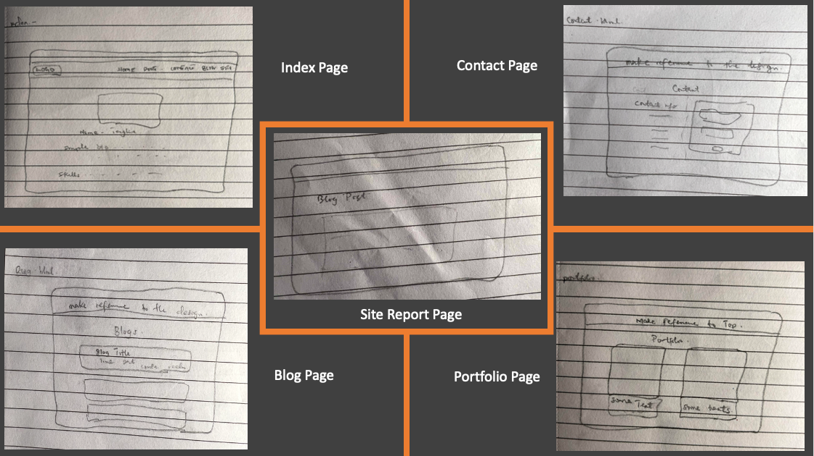Moving forward, I created a git repository on GitHub, the reason for this is to utilize the version control functionality during the course of coding, this will also allow tracking changes made to files during the coding phase.
Using the website coolors.co, I was able to pick an appealing color combination for the website.
Development Phase
After highlighting the pages required for the website, i.e. index, portfolio, contact, blog, and site report pages. I started by creating a branch from the main on the repository starting with the index (pages/implementing-index-page) where development for the index page was implemented. After partial completion of the index page, a commit was made for the changes and was pushed to the repository.
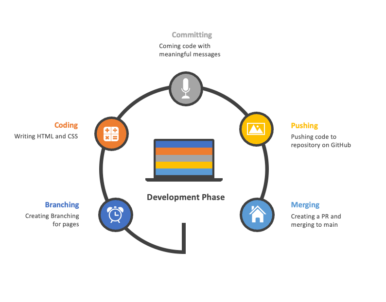
Furthermore, I made a pull request (PR) to the main branch, and the PR was merged so that I can share the styles designs on the main.css with other branches and pages like portfolio, contact, blog, and site report pages that were created off the main branch. The process of creating a branch, coding, committing, pushing, and merging to the main was repeated for each page development throughout this phase.
Challenges
About 80% completion of all web pages for the desktop display view which was pretty straightforward, I created a branch for the mobile responsiveness (mobile-responsiveness) of the main which contains all the designs and pages. This was to implement the web designs on mobile devices.
Starting off this phase, one of the most important components was the hamburger icon that appears when the page is viewed from mobile devices. The icon is meant to display and hide the navigation buttons on mobile devices.
This is one of the major challenges phased during the coding phase. With the resources in a slide provided in class and a sample from the website w3schools, I was able to design the hamburger menu icon to display and close the navigation buttons.
Code Validation Report
After completing all web pages and designs for both mobile and desktop views. I created a branch for validating the codes. I made use of the Markup Validation Service provided by the World Wide Web Consortium (W3C) to checks for code quality and industry standards to validate all web pages, including both HTML and CSS files. An overview of the report is attached below
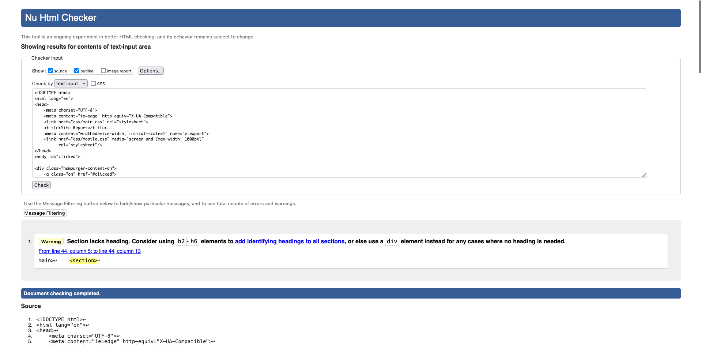
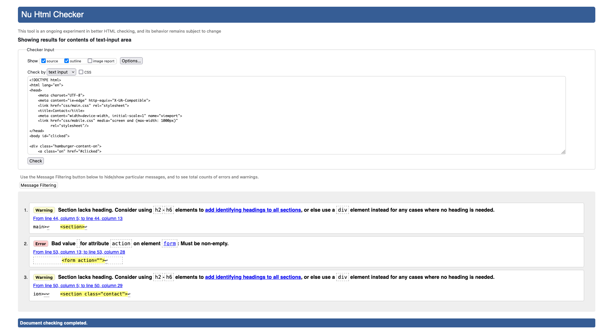
The website highlighted the warning and gave the consideration to the changes required to make. I implemented the suggested changes and make sure all pages passed the validation test. The suggested change was committed, pushed, and merged into the main.
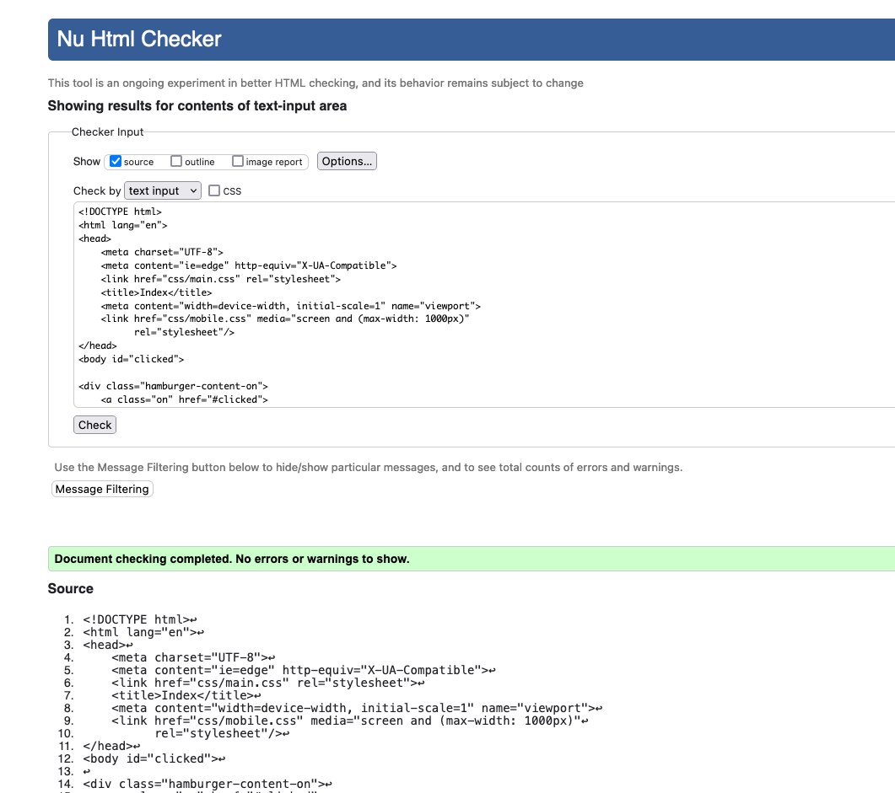
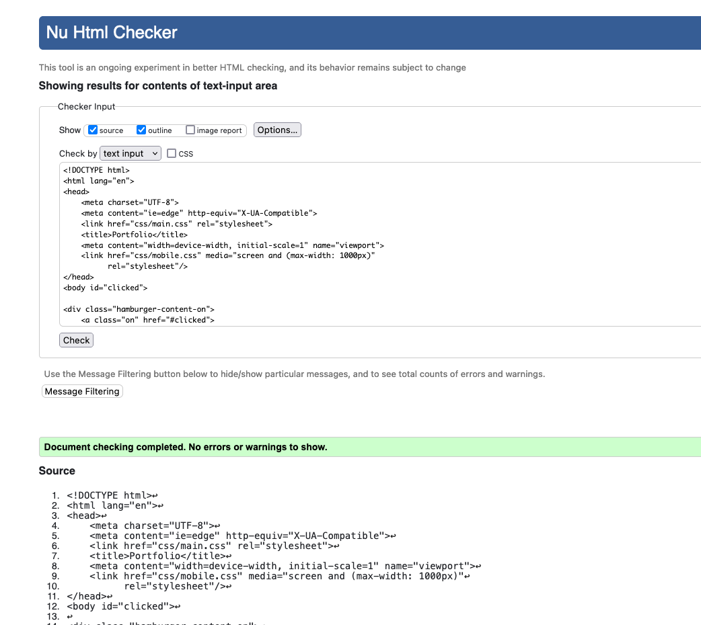
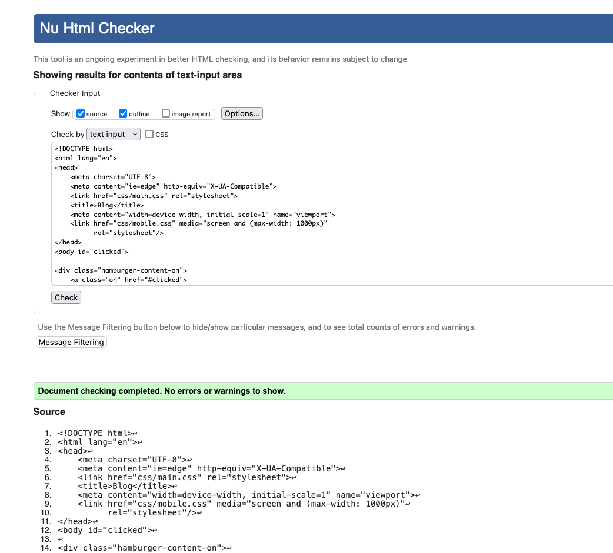
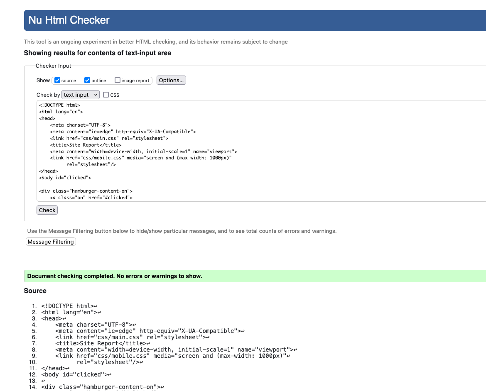
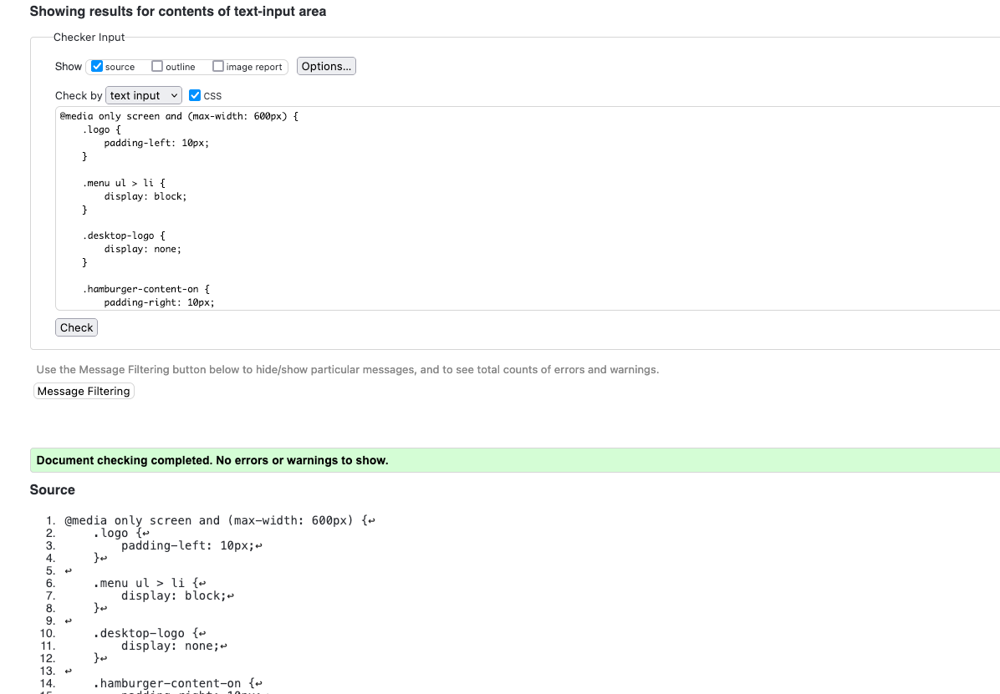
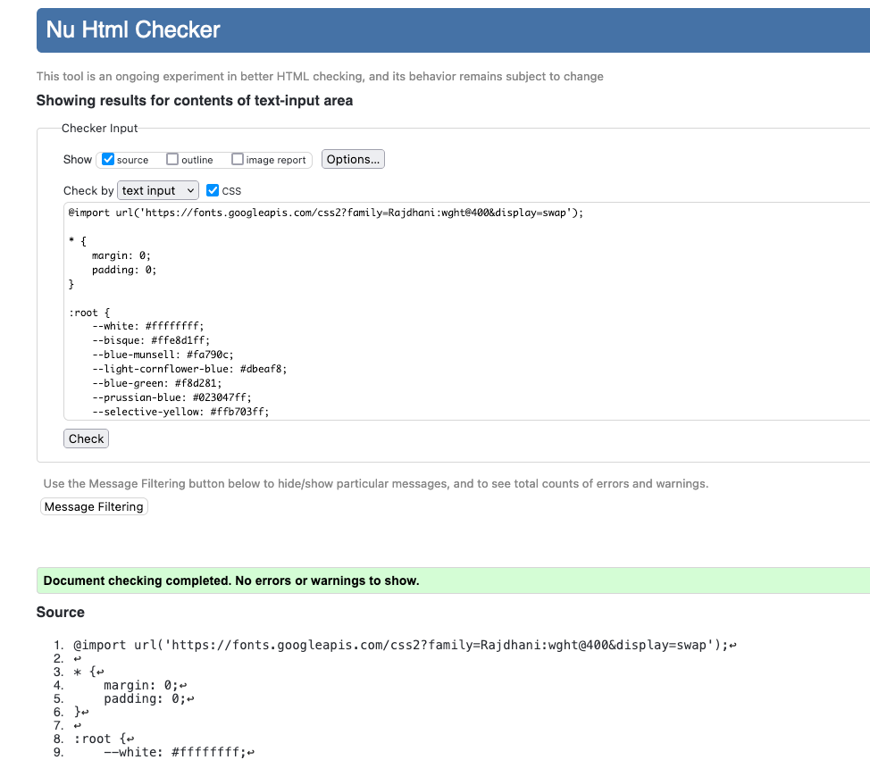
GitHub Page Deployment
GitHub provides a service that allows users to deploy a static webpage on GitHub pages, I made use of this service and deploy the website on the GitHub Repository page by following the instruction provided in class and on GitHub Pages 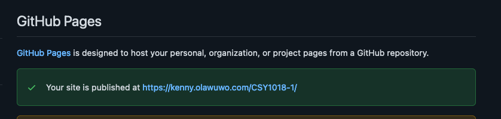
The website is currently live on here
Conclusion
In conclusion, the project was fascinating and interesting to work on, I learned the basics and principles of user interface designs, HTML and CSS coding syntax, git version control, and building a webpage right from the idea to implementation and finally deploying stage. I do hope to work and design more webs in the future.